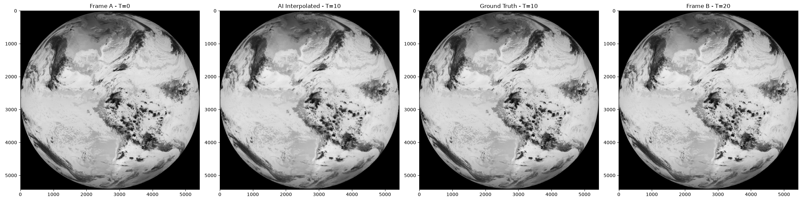

Satellite
Flow
ISRO Hackathon 2026 · PS-12
AI-Powered Satellite Frame Interpolation
GOES-19 ABI Channel 13 · Thermal IR · 2026-01-01 · Pretrained RIFE Model
SSIM Score
0.5824
Structural Similarity
PSNR
16.07 dB
Peak Signal-to-Noise Ratio
MSE
0.0247
Mean Squared Error
Frame Comparison — Original vs AI Interpolated
Frame A — T = 0 min
Original

AI Interpolated — T = 10 min
AI Generated
Ground Truth — T = 10 min
Original
Frame B — T = 20 min
Original
Dataset Info
Satellite
GOES-19
Channel
ABI Channel 13 (Thermal IR)
Resolution
5424 × 5424 pixels
Input interval
20 minutes
Output interval
10 minutes
Model Info
Model
RIFE HDv3
Framework
PyTorch
Status
Pretrained (no fine-tuning)
Input size
512 × 512
Data source
NOAA AWS S3